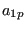
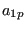

Keyword type: step
With *OBJECTIVE one can define the objective functions in a sensitivity analysis. Right now the following objectives are allowed for TYPE=COORDINATE design variables:
 |
(495) |
where  is the von Mises stress in node i,
is the von Mises stress in node i,  and

are user-defined parameters. The higher
and

are user-defined parameters. The higher  the closer
the closer  is to the actual
maximum (a value of 10 is recommended; the higher this value, the sharper the
turns in the function).
is the target stress, it
should not be too far
away from the actual maximum.
is to the actual
maximum (a value of 10 is recommended; the higher this value, the sharper the
turns in the function).
is the target stress, it
should not be too far
away from the actual maximum.
and for TYPE=ORIENTATION design variables:
There are no parameters. Exactly one *OBJECTIVE keyword is required in a *SENSITIVITY step. This keyword has to be followed by at least one objective function. If a *CONSTRAINT card is used within the step exactly one objective function must be defined within the step.
First line:
Second line:
The objective functions SHAPEENERGY, MASS, DISPLACEMENT and STRESS require a *STATIC step before the *SENSITIVITY step, the objective function EIGENFREQUENCY requires a *FREQUENCY step immediately preceding the *SENSITIVITY step and the objective function GREEN requires a *GREEN step before the *SENSITIVITY step. Therefore, the {SHAPEENERGY, MASS, DISPLACEMENT, STRESS} objective functions, the {EIGENFREQUENCY} objective function and the {GREEN} objective function are mutually exclusive within one and the same *SENSITIVITY step.
Example: *OBJECTIVE DISPLACEMENT,N1
defines the sum of the square of the displacements in set N1 to be the objective function.
Example files: sensitivity_I.